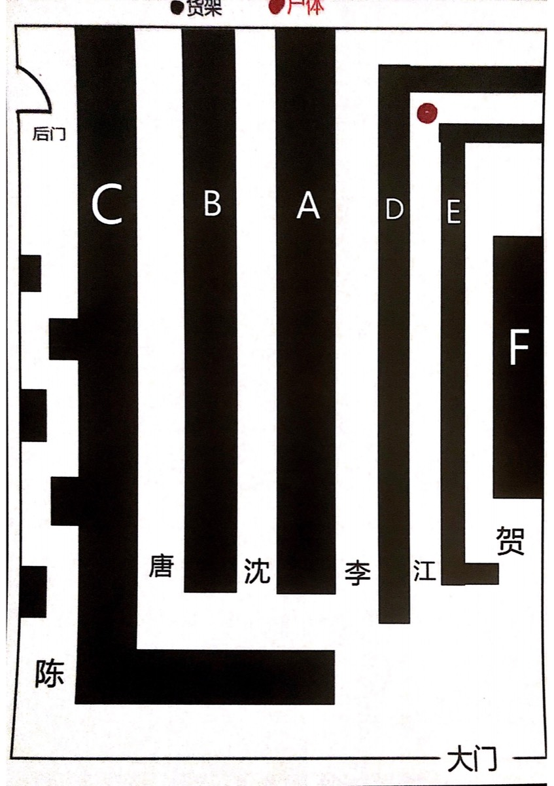

阅读器
选择章节
请先选择角色和章节开始阅读。
任务
线索
收藏
搜索
特殊
任务
点击任务可标记完成。
线索栏
暂无已搜集的线索。
收藏 & 高亮
暂无收藏。
全文搜索
输入关键词搜索所有剧本内容。
阅读设置
背景主题
字体大小
小
中
大
特大
重置所有数据
阅读进度、收藏、高亮、线索全部清除
v
特殊章节
输入密码解锁
特殊章节
密码提示：特殊之日
解锁
关闭
关闭
关闭
关闭
关闭
关闭
关闭
任鸣的愿望
请做出你的选择
一起去看海
延续任鸣的生命
关闭
关闭
关闭
关闭
1 / 9
关闭
1 / 5
关闭
1 / 5
关闭
1 / 6
关闭
1 / 4
关闭
1 / 7
收藏这段文字？
取消
收藏
贺冬青的结局
心脏的抉择
是否要归还这颗心？
归还心脏
不归还心脏
尾声
请做出你的选择
B
H
关闭
高亮
收藏
